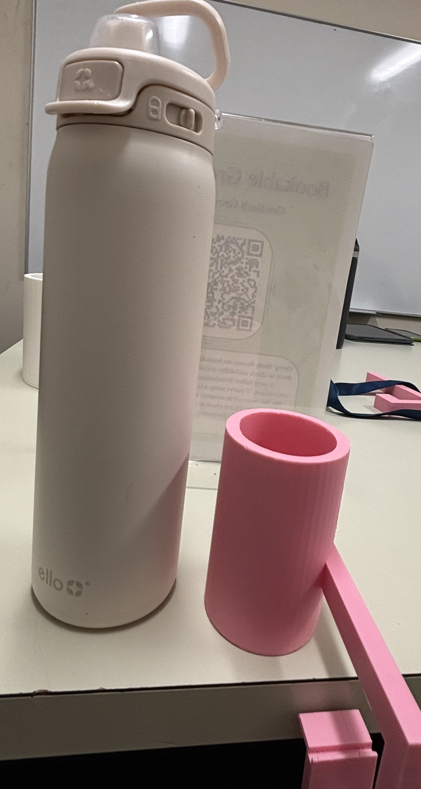

Building and Assembling the V-2 Phoenix Hand

To learn more about asssited technology, I picked the V-2 Pheonix hand to build to see how useful it could be and what could be improved. For this project, I partnered with (), click here to see his write up. For this project, I will say what worked for me, how it helped me learn more about learn more about open assited technology, and ways in which I think it could be improved.
For acces to the files, it can be found either through NIH 3D Print Exchange (click here for link) and thingverse (click here for link). In terms of finding the files, it is pretty easy to find as it is more of a google search on 3d printing website for example; thingverse. But for preference, for example wanting to print the V-2 hand and V-3 wrist and/or finger attachments, Since the parts are not grouped together based on sections or anything of such, it is difficult to confirm that you are printing the right parts or have all the parts. In my case, for example, as we assembling the part, we ended missing some parts such as whipletree. Fortunately, it was a small print and had time on our side, but in some cases of neccessity, it could be an issue.
When it comes to the steps of actually building hand, the orginal steps (click here for website) from 3d NIH, which other groups. Additionally, watching videos might be helpful for some depending on learning style. But for me, it was actually difficult so I tried watching the whole vidoe, then having the video stil playing as I was working through the video. But I kept having to backwards the video. So I actually found not the best but a more detailed step by step website, it is more explanatory, and has pictures for visuals. It doesn’t show some little steps but it is pretty explanatory of such steps, addtionally, it is prettry easy to figure out by just looking at the previous and next steps. This design is also pretty accessible I would so as it is divided into some parts and does not require a big printer.
For functionality, the hand works okay. The design is not the best for most mobility things. For example; hold or picking up a water bottle, it can pick up a water bottle but because for me at least, it was printed out of PLA, the friction caused the water bottle to be slippery. Eventually we added Lee Tippi gel fingertips on the tips of the fingers which helped with the mobility of picking up little things such as keys, and more but for things in which you need your whole hand, it was still a little slippery. This might have been an issue with how we assembled our hands, but the reaction of our thumbs was either too much or too little compared to the rest of the fingers. Me and my partner did go back and tighten and loosen the string connected to the thumb. But we could not get it to match the traction of our other hands. This could be due to the angle and thereby the lack of tools to make sure it was at exactly 45 degrees. The hand was still functional, but the thumb was just slightly uncoordinated with the rest of the fingers.
For the most challenging steps to follow through for my group and most were the strings. For improvement, I would just include more pictures of where each string goes for each step , and a more detailed explanation. For example - - . Then another step in which we struggled with was the bending of the gauntlet to match and fit the hand. In the instructions, it just shows the gauntlet bend to fit the hand without showing the how. So for improvement, I would include an additional step, like before attaching the gauntlet to the hand using the (thermo gun??) or just something warm enough to heat PLA for bending. If possible, have a mold of how bent you want the gauntlet, if not mold or bent until it fits. Try to bend as little by little as it is difficult to resolve the object back to its original state once you bend it. Another option for this even though it might greatly increase the printing time. To avoid working with heat, is to redesign the gauntlet in a CAD design platform such as onshape, redesign it to be printed to fit the hand. Even though it might increase print time, it might offer a chance for more accuracy.

For contributing back or the one thing I and my partner made to make this process easier for people using is a list of all the objects needed to have a functional phoenix hand. In the open source STL files, the names might slightly change but it should still be similar for another version. For reference, I 3D printed V-3 Hand and V-2parts, the list can be accessed here. Additionally, another problem we noticed even though we scaled the hand and individual parts to 150%, the screw kept falling out, so when building this, I would suggest scaling the parts such as screws to about 160 - 165% just in case. Anyway, we added another gauntlet, which could carry extra screws and more. It is attached to the velcro straps and opposite side of the other gauntlet.
Paragraph Five - Ethical Reflection: Think about this project in the context of the ethics of design we have been discussing in class. Write a thoughtful reflection applying at least two principles from the Microsoft Inclusive Design Toolkit or class readings (IDEO, Norman, Hendren). Consider: Who benefits from open-source AT? Who is left out? What are the limitations of a volunteer-driven model for medical devices? - printing process 1 3. Bridge to the Capstone: Based on what you learned in this project, write a short paragraph (on your website) identifying a specific task, user need, or design challenge you discovered that deserves deeper exploration i - printing process 2

Figure 3: Settings 1

Figure 4: Settings 2